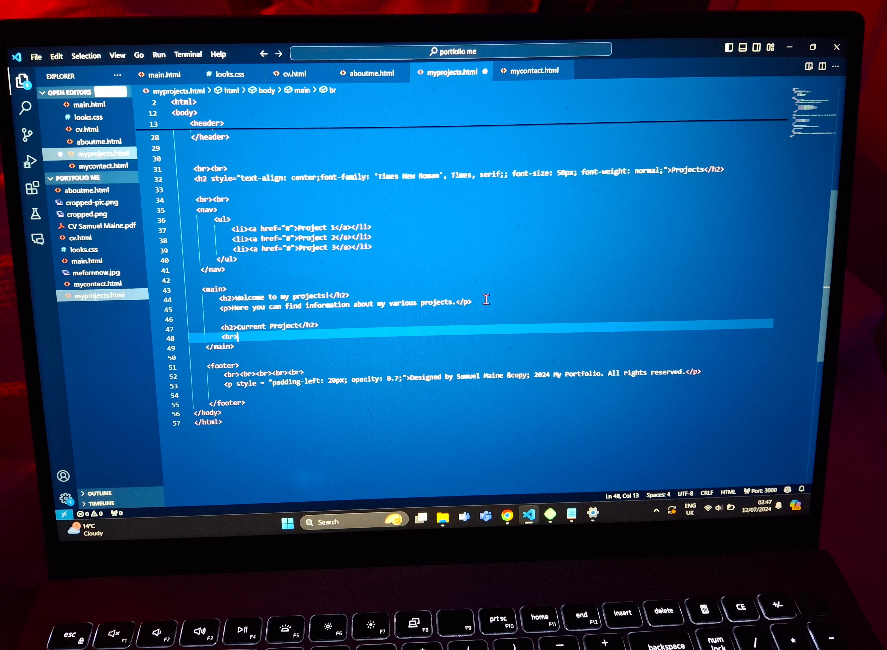
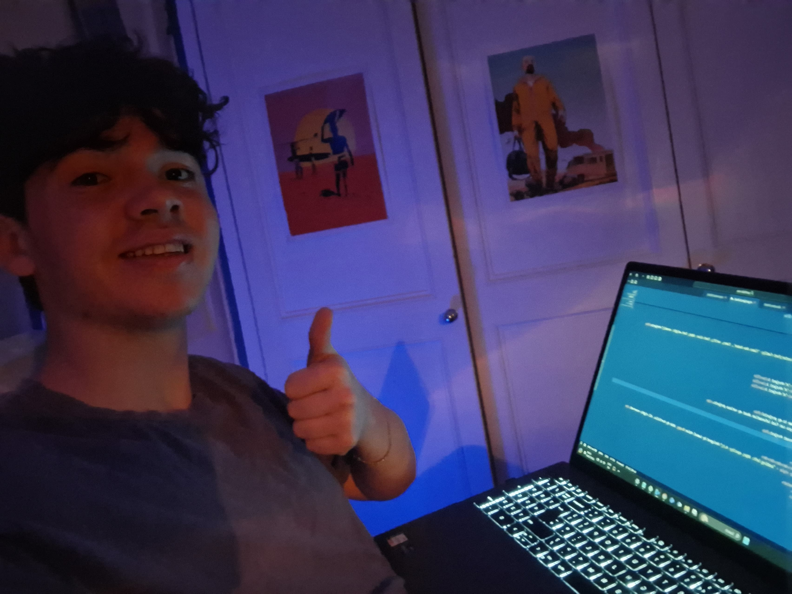

Welcome to my Projects!
Current Project
The current project im working on which will forever be in progress is exactly what your reading and viewing now! At the moment you will be accessing this static site through github's free static hosting called git pages! I found this project to have many hiccups with only having learnt html css and java script recently in my second semeter of year 1. I had orginally planned to try and make this site using wordpress and cut some corners using the software called Local allowing me to have an offline version of a wordpress website and manipulate untill i was satisifed however due to wordpress's nature of the site being dynamic and me needing a static site to host i started looking for plugins where i came across simply static. This plugin should have allowed me to convert the dynmaic site into several html files but kept receving incorrect files and a huge headache of links to no where so i gave myself a week to wrap my head around a solution and said Fuck it... we coding this bitch from scratch. still basing my design of my wordpress site i started slowly constructing each page with a mix of css imbedded within the html and also some seperate css within a seperate css file to show i can do it haha. after lots of late late nights and some redbull and youtube tutorials and w3schools and geeksforgeeks and learning much much more than my first ever html project haha i can proudly present this website! Below are some pictures of the Local wordpress original which i based this site off and some behind the scenes of me grafting away during this project haha! There will also be a link to the github repo where you can view the code and any future pushes i commit!
 